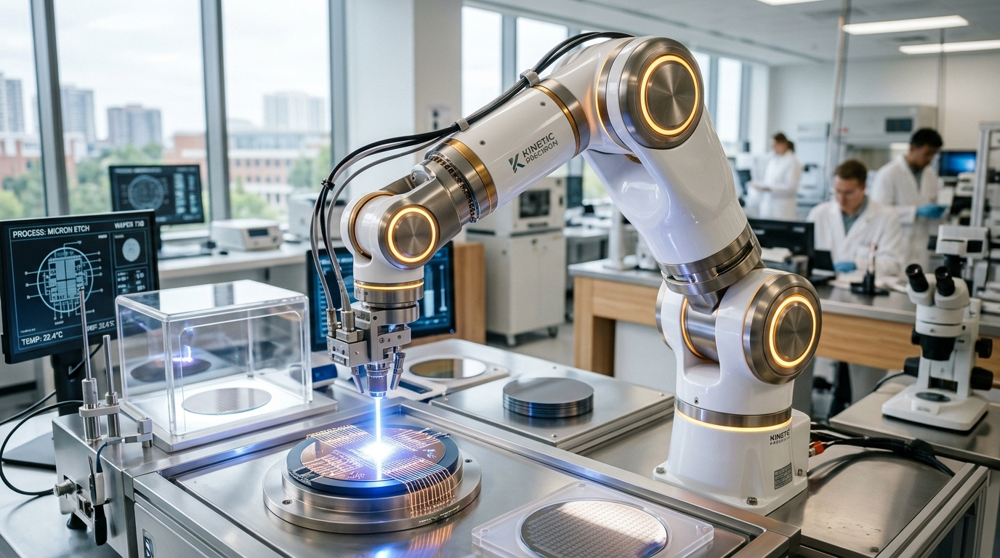
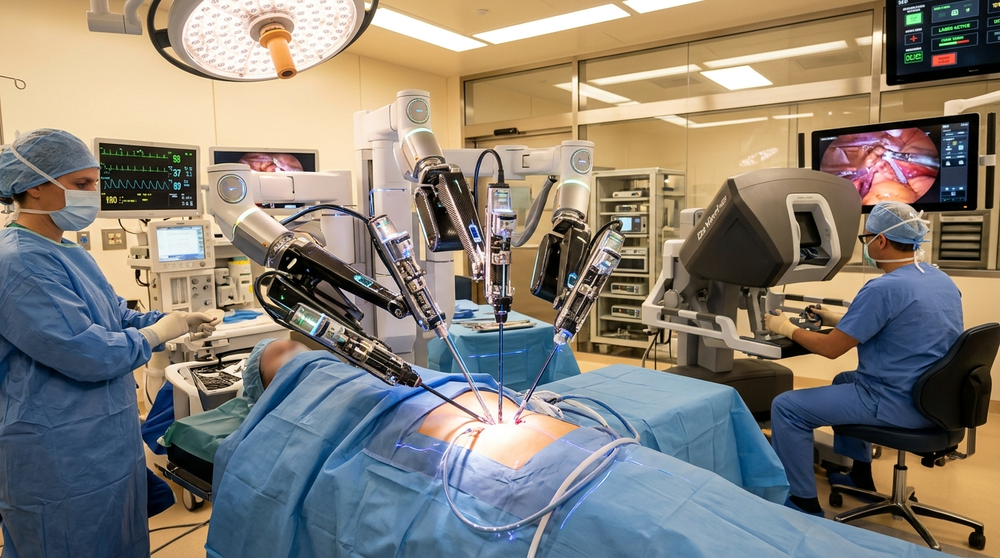
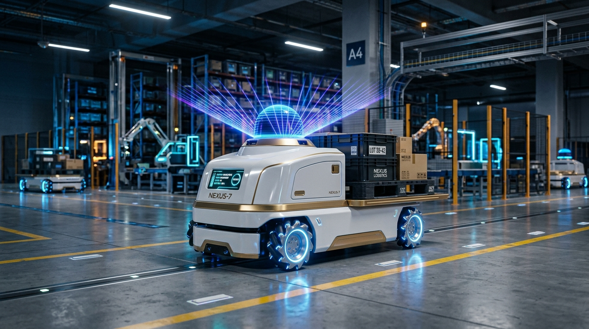
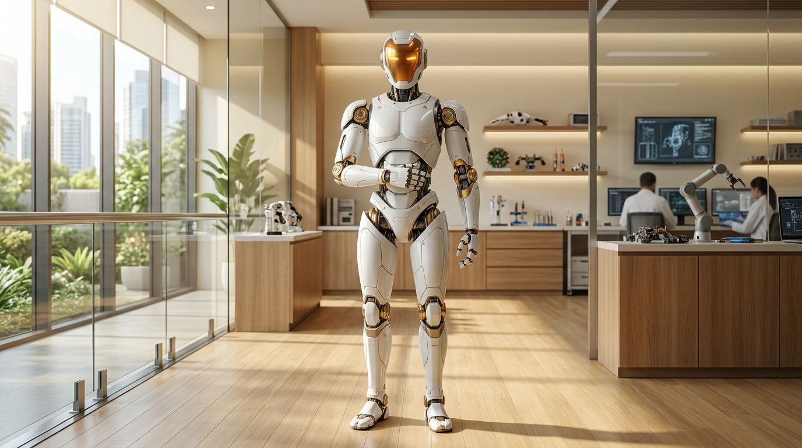

Transformative Applications
How modern robotics scales from sub-millimeter surgical tremor filtering in microsurgery to autonomous extraterrestrial rovers exploring Mars.

Automated Gigafactories
Synchronized 6-DOF industrial arms work in tandem with autonomous mobile robots to assemble electric vehicles, weld structural battery trays, and produce lithium cells with 99.8% continuous uptime.

Micro-Surgical Teleoperation
Robotic teleoperation consoles actively filter involuntary physiological hand tremors and scale fine movements (5:1 ratio), enabling surgeons to suture delicate nerve fibers and perform minimally invasive keyhole interventions.

Planetary Rovers (Mars)
Robots operating in deep space withstand extreme thermal swings (-130°C to +30°C), ionizing cosmic radiation, and 20-minute radio communication latency through on-board stereo visual hazard avoidance.

Next-Gen Humanoid Logistics
Bipedal humanoids integrate multimodal Vision-Language-Action (VLA) models and tactile array fingertips to transport totes, operate elevators, and collaborate alongside human staff without facility redesign.